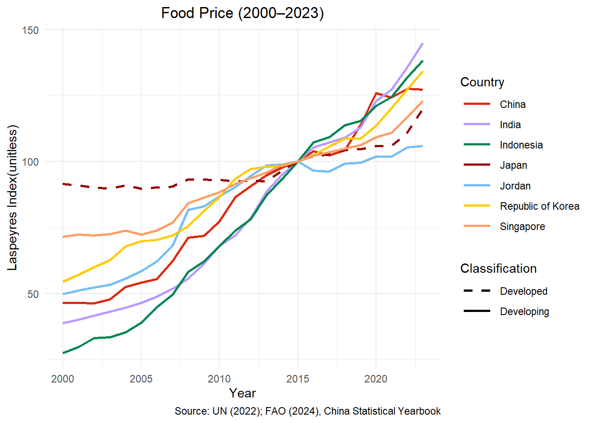
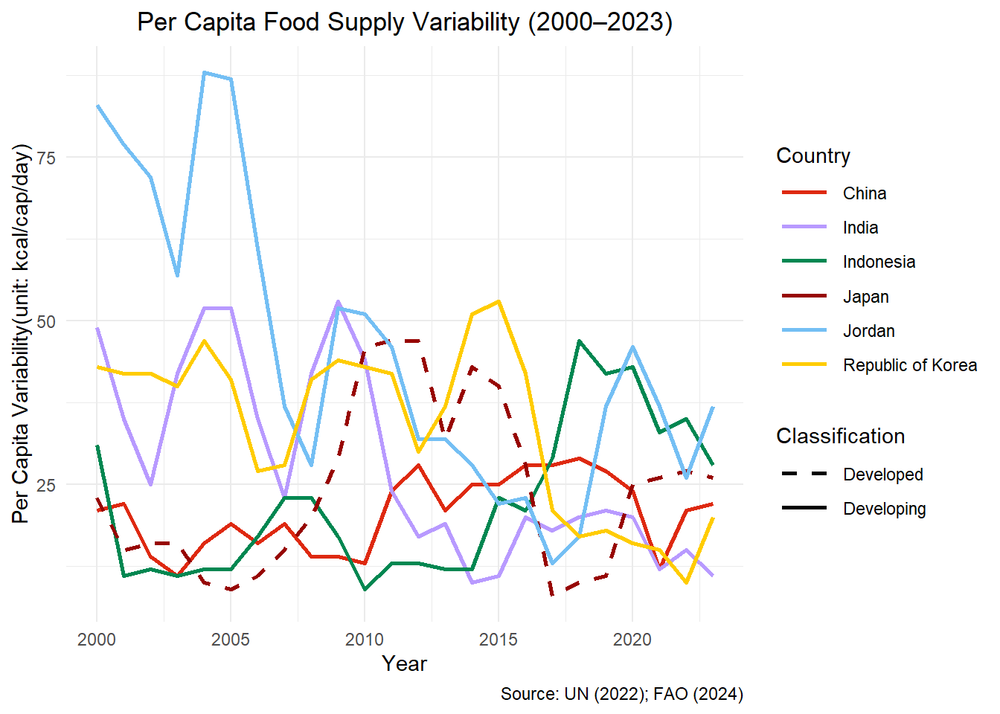
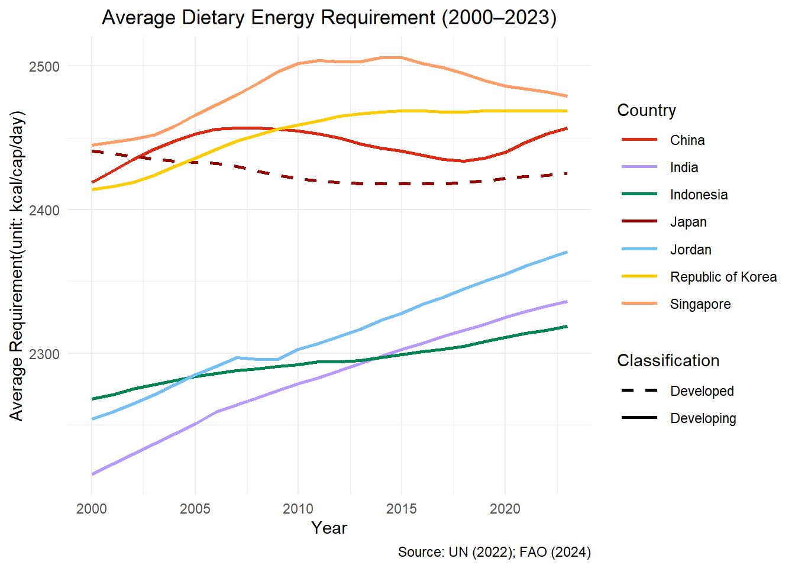
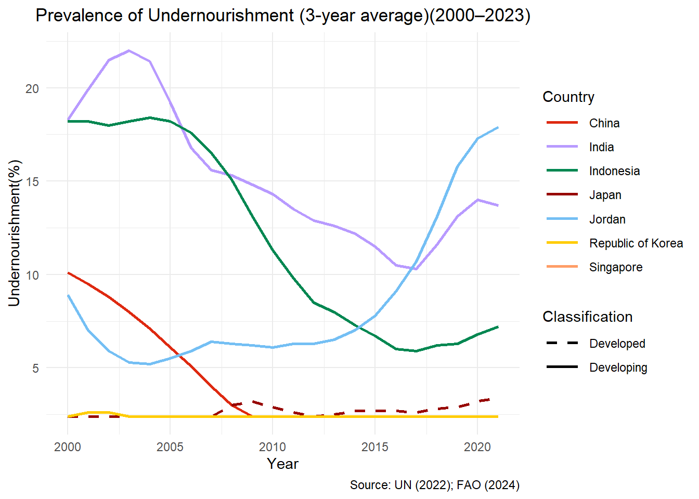

library(readr)
library(readxl)
library(tidyverse)
library(tidyr)
library(dplyr)
library(stringr)
library(janitor)
library(ggplot2)
library(knitr)
library(kableExtra)Which Asian country has the most expensive diet over time? Is it increasingly worth what they eat?– A seven-country comparative analysis
Assignment 4 ETC5512
Question to answer
As an international student abroad who cooks but can never quite recreate the flavors of home, I often find myself missing my mom’s cooking. Living far from home, I began to wonder: do people around the world really get what they pay for when it comes to food? That question inspired my research: Which of seven Asian countries has the most expensive diet—and is it increasingly worth what they eat?
Datasets I chose and why
To answer my question, I use data mainly from the FAO and United Nations, as these international organizations provide reliable and standardized national-level indicators, essential for cross-country comparisons.
I focus on four key variables:
Consumer Food Price Index (2015 = 100) – measures how expensive food is over time in each country.
Prevalence of undernourishment (%)
Per capita food supply variability (kcal/cap/day)
Average dietary energy requirement (kcal/cap/day)
The last three capture different aspects of food adequacy and stability, allowing me to assess whether expensive diets are actually “worth it.”
Together, these indicators offer a multidimensional view: not only how much people pay for food, but whether they get enough of it, consistently, and in line with their nutritional needs.
Steps to download the data
- Food quality data
- Navigate to this FAO database page about Food Security.
- Apply filters for countries: “China”, “India”, “Indonesia”, “Japan”, “Jordan”, “Republic of Korea” and “Singapore”; elements: Value; items: “Prevalence of undernourishment (percent) (3-year average)”, “Per capita food supply variability (kcal/cap/day)” and “Average dietary energy requirement (kcal/cap/day)”; years: Select All;
- Click “View” to display the data, then select “Download” to save it in CSV format.
- Food price data
- Navigate to this FAO database page about Food Price.
- Apply filters for countries: “China”, “India”, “Indonesia”, “Japan”, “Jordan”, “Republic of Korea” and “Singapore”; years: Select All; items: Consumer Price, Food Indices(2015 = 100); month: Select All
- Click “View” to display the data, then select “Download” to save it in CSV format.
Food price data for China This data is missing from the FAO database. To obtain it, I manually collected the data by consulting the China Statistical Yearbook from 2001 to 2024. I had hoped to use web scraping techniques to improve efficiency, but unfortunately, the yearbook does not have an online version with a structured webpage. Instead, the data is presented as images, making manual lookup the only feasible way to gather this important data.
Classification data of developing and developed countries Use this URL.
Term of Use
The data downloaded from FAO and UN for this assignment (Datasets 1, 2, and 4) are all available under the Creative Commons Attribution 4.0 International (CC BY 4.0) license, which permits users to: ○ Share, adapt, and use the data for any purpose including commercial use as long as proper attribution is made.
The food price data for China sourced from existing literature has been properly attributed through citations to their respective editions of the China Statistical Yearbook in the reference list.
Data processing
load the library.
Read the data.
rd_fq <- read_csv("data/FAOSTAT_data_en_6-14-2025.csv")
rd_fp <- read_csv("data/FAOSTAT_data_en_price_6-14-2025.csv")
rd_fp_china <- read_csv("data/china_food_cpi.csv")
his_classif_of_regions <- read_excel("data/historical-classification-of-developed-and-developing-regions.xlsx", sheet = 2)Keep only relevant variables.
# Remove columns with identical values
de_fp <- rd_fp %>%
select(-c(`Domain Code`, `Domain`,
`Element Code`, `Element`,
`Item Code`, `Year Code`, `Note`))
de_fq <- rd_fq %>%
select(-c(`Domain Code`, `Domain`,
`Element Code`, `Element`,
`Item Code`, `Year Code`, `Note`)) %>%
mutate(Year = str_sub(Year, 1, 4)) %>% #S tandardize the format of the year column
mutate(Value = ifelse(Value == "<2.5", 2.4, Value))
his_classif_of_regions <- his_classif_of_regions %>%
select(c( "ISO-alpha3 Code", "Developed / Developing regions")) %>%
rename("area_code_iso3" = "ISO-alpha3 Code",
"classification" = "Developed / Developing regions") %>%
# Update China's country code to align with FAO conventions
mutate(area_code_iso3 = ifelse(area_code_iso3 == "CHN", "F351", area_code_iso3)) Process food price data.
de_fp$Unit <- as.character(de_fp$Unit)
sup_fp <- de_fp %>%
# Fill in missing 'Unit' values with "Laspeyres Index"
# (commonly used for food price indices; dimensionless, unit-free)
replace_na(list(Unit = "laspeyres_index")) %>%
# Calculate the arithmetic mean of food price indices by country and year
filter(Unit == "laspeyres_index") %>%
group_by(`Area Code (ISO3)`, Year) %>%
summarise(con_p_food_indices_year = mean(Value, na.rm = TRUE)) %>%
ungroup()Handle missing values: Adjust China’s data so that the base year is 2015.
rd_fp_china_2015 <- rd_fp_china %>%
# Convert to numeric in case the column is character type
mutate(cpi_food_numeric = as.numeric(cpi_food_based_previous_year)) %>%
arrange(year) %>%
# Create a new column: CPI with base year = 2015
mutate(
con_p_food_indices_year = {
base_index <- which(year == 2015) # Find the position of the base year (2015)
index_vals <- numeric(n()) # Create a vector to store the new index values
index_vals[base_index] <- 100 # Set 2015 as 100
# Backward calculation (2000–2014)
if (base_index > 1) {
for (i in (base_index - 1):1) {
index_vals[i] <- index_vals[i + 1] / (cpi_food_numeric[i + 1] / 100)}}
# Forward calculation (2016–)
if (base_index < n()) {
for (i in (base_index + 1):n()) {
index_vals[i] <- index_vals[i - 1] * (cpi_food_numeric[i] / 100)}}
index_vals}) # Return the full vectorClean variable names and convert data types as needed.
de_fq_cleaned <- de_fq %>%
clean_names() %>%
mutate(across(c(year, value), as.numeric))
sup_fp_cleaned <- sup_fp %>%
clean_names()
rd_fp_china_cleaned <- rd_fp_china_2015 %>%
select(-c("Area", "cpi_food_numeric",
"cpi_food_based_previous_year")) %>%
clean_names()Merge datasets.
comp_fp <- bind_rows(sup_fp_cleaned, rd_fp_china_cleaned)
data <- de_fq_cleaned %>%
left_join(comp_fp, by = c("area_code_iso3", "year")) %>%
select(-c(flag_description)) %>%
rename(food_price = con_p_food_indices_year) %>%
left_join(his_classif_of_regions, by = "area_code_iso3")
data$classification <- as.factor(data$classification)Export the processed dataset.
readr::write_csv(data, "data/processed_food_data_35215397.csv")More details about my dataset
For more details like data limitations, data privacy please reference to readme and the data dictionary. They are also available from my github repository for this assignment.
Which Asian country has the most expensive diet over time? Is it increasingly worth what they eat?– A seven-country comparative analysis
Motivation
As an international student abroad who cooks but can never quite recreate the flavors of home, I often find myself missing my mom’s cooking. Living far from home, I began to wonder: do people around the world really get what they pay for when it comes to food? That question inspired my research: Which of seven Asian countries has the most expensive diet—and is it increasingly worth what they eat?
Data
Below, let’s use two tables to gain an overview of the dataset’s structure and characteristics.
| area | item | n_years | min | q1 | median | q3 | max | avg_food_price |
|---|---|---|---|---|---|---|---|---|
| China | Average dietary energy requirement (kcal/cap/day) | 24 | 2419 | 2437.5 | 2446.5 | 2453.5 | 2457 | 84.63 |
| China | Per capita food supply variability (kcal/cap/day) | 24 | 11 | 15.5 | 21 | 25 | 29 | 84.63 |
| China | Prevalence of undernourishment (percent) (3-year average) | 22 | 2.4 | 2.4 | 2.4 | 5.85 | 10.1 | 80.74 |
| India | Average dietary energy requirement (kcal/cap/day) | 24 | 2216 | 2257 | 2285.5 | 2313 | 2336 | 80.85 |
| India | Per capita food supply variability (kcal/cap/day) | 24 | 10 | 17.75 | 22 | 42 | 53 | 80.85 |
| India | Prevalence of undernourishment (percent) (3-year average) | 22 | 10.3 | 12.67 | 14.15 | 17.92 | 22 | 75.44 |
| Indonesia | Average dietary energy requirement (kcal/cap/day) | 24 | 2268 | 2285.5 | 2294 | 2303.5 | 2319 | 78.11 |
| Indonesia | Per capita food supply variability (kcal/cap/day) | 24 | 9 | 12 | 19 | 29.5 | 47 | 78.11 |
| Indonesia | Prevalence of undernourishment (percent) (3-year average) | 22 | 5.9 | 6.9 | 10.55 | 17.9 | 18.4 | 72.93 |
| Japan | Average dietary energy requirement (kcal/cap/day) | 24 | 2418 | 2419 | 2423.5 | 2432.25 | 2441 | 97.27 |
| Japan | Per capita food supply variability (kcal/cap/day) | 24 | 8 | 14 | 24 | 29.75 | 47 | 97.27 |
| Japan | Prevalence of undernourishment (percent) (3-year average) | 22 | 2.4 | 2.4 | 2.6 | 2.88 | 3.4 | 95.6 |
| Jordan | Average dietary energy requirement (kcal/cap/day) | 24 | 2254 | 2289.5 | 2309.5 | 2340.5 | 2371 | 82.97 |
| Jordan | Per capita food supply variability (kcal/cap/day) | 24 | 13 | 28 | 37 | 58 | 88 | 82.97 |
| Jordan | Prevalence of undernourishment (percent) (3-year average) | 22 | 5.2 | 6.12 | 6.45 | 9.05 | 17.9 | 80.91 |
| Republic of Korea | Average dietary energy requirement (kcal/cap/day) | 24 | 2414 | 2440.5 | 2463.5 | 2469 | 2469 | 90.25 |
| Republic of Korea | Per capita food supply variability (kcal/cap/day) | 24 | 10 | 20.75 | 40.5 | 42.25 | 53 | 90.25 |
| Republic of Korea | Prevalence of undernourishment (percent) (3-year average) | 22 | 2.4 | 2.4 | 2.4 | 2.4 | 2.6 | 86.56 |
| Singapore | Average dietary energy requirement (kcal/cap/day) | 24 | 2445 | 2471.25 | 2487 | 2502 | 2506 | 91.73 |
| Country | Item | Missing Count |
|---|---|---|
| Singapore | Prevalence of undernourishment (percent) (3-year average) | 22 |
From the tables we can see that food price indices mostly range between 30 and 70, while median dietary energy requirements remain around 2400 kcal. Singapore has missing values in certain years, which should be noted during analysis.
Analysis
Here, I will use data visualization to illustrate the trends of food prices and food quality over time, followed by an interpretation of the figures.
1. Food Price

The food price index from 2000 to 2023 reveals two distinct phases when using 2015 as a reference point. Before 2015, most Asian countries experienced a steady rise in food prices, gradually converging toward the 2015 baseline. After 2015, the trend becomes more scattered—some countries like India and Indonesia experienced rapid increases, while others like Japan and Singapore remained relatively stable.Notably, Jordan showed a rare decline in food prices around 2015–2017, diverging from the general upward trend.
I also find a interesting insight which treating 2015 as a pivot: before 2015, “100” represented a target level being approached; after 2015, it became a benchmark some countries exceeded significantly. This dual perspective highlights not only who pays more for food, but also when and how that burden increased. It adds temporal depth to the question of affordability and reveals that rising prices are not uniformly distributed nor equally justified across countries.
2. Food Quality
2.1 Per capita food supply variability (kcal/cap/day)

In the earlier years, especially before 2007, two distinct trend groups are visible: Jordan, India, and South Korea show a generally higher and more fluctuating food supply variability, while China, Japan, and Indonesia remain in a lower and steadier range. After 2007, this grouping becomes less distinct, as the patterns begin to converge and fluctuate more uniformly. Indonesia’s variability shows a noticeable increase over time, with its values rising steadily in recent years. The overall trend indicates that while some countries maintain relatively stable levels, others—like Indonesia—experience growing fluctuations in food supply per capita, suggesting a loss of consistency in food availability.
2.2 Average dietary energy requirement (kcal/cap/day)

In 2000, countries fall into two distinct groups based on dietary energy requirements: a high group (above 2400 kcal) including Singapore, Korea, Japan, and China, and a low group (below 2300 kcal) including Jordan, Indonesia, and India. Over time, most countries show increasing trends, especially in the lower group. Singapore maintains the highest levels, peaking around 2540 kcal in 2010. Korea shows a similar rise-then-stabilize pattern. Japan declines steadily, while China increases overall with fluctuations around 2007 and 2017. Jordan, initially in the lower group, nearly reaches 2410 kcal by 2023, narrowing the gap significantly.
2.3 Prevalence of undernourishment (percent) (3-year average)

The chart shows three main trends in the prevalence of undernourishment across the selected Asian countries. First, an improving trend is observed in China, where the indicator consistently declines over time. India and Indonesia also initially improve, but both show a rebound around 2016, indicating some reversal. Second, a worsening trend is evident in Jordan, where undernourishment increases gradually over the years. Finally, the developed countries—Japan and South Korea—maintain consistently low levels, suggesting stable food security. These distinct patterns highlight varying nutritional challenges and progress among the countries.
Conclusions
Overall Food Quality
The improvement in food quality is becoming increasingly visible in developing countries. Countries like China and Indonesia show a general upward trend in dietary energy supply, while their undernourishment rates have declined steadily. This suggests that people are not only eating more, but also gaining better access to adequate nutrition—an encouraging sign of progress toward a more “worth it” food system.
Rising energy demand but unstable food systems: The case of Jordan. Jordan’s dietary energy supply increased from around 2270 kcal in 2000 to over 2350 kcal in 2023 . However, it also exhibits high food price volatility, rapidly rising food prices, and a persistently high undernourishment rate. This combination highlights food system instability: while caloric intake is rising, it may not translate to nutritional adequacy or consistent access.
Low intake doesn’t mean undernourishment: Japan’s “less is more” approach. Japan’s dietary energy supply shows a gradual decrease from 2000 to 2023, yet its undernourishment rate remains the lowest among all countries observed, and its food price trends remain stable. This indicates a high-quality, balanced diet—fewer calories, but better nutrition.
Discussion
🍚 Who’s paying the most for their meals? To answer this, I compared four indicators: food_price, price_volatility, calorie_supply, and undernourishment. 📊 My goal is to figure out not just who spends more, but who eats smart.
By 2023, Japan emerged as the most “worth it” country: stable prices, moderate and steady energy supply, and barely any undernourishment. A quiet triumph in dietary quality. 🥢 Meanwhile, China showed remarkable progress—though food is more expensive, calories are up and undernourishment is down. 📈
Back in 2000, both countries were mid-range, but now they’ve climbed to the top. Maybe it shows us something bigger: as economies grow, it’s not just about how much we eat, or how costly—but how well we eat. 🥦💡
Disclaimer: Just sharing some data-driven foodie thoughts—don’t take it too seriously, but definitely take it with a grain of salt 🧂.
Thank you for reading!
References
[© FAO] [2025] [Consumer Price Indices (FAOSTAT)] [N/A] [https://www.fao.org/faostat/en/#data/CP] [Accessed 14 June 2025]
[© FAO] [2025] [Food Security Indicators (FAOSTAT)] [N/A] [https://www.fao.org/faostat/en/#data/FS] [Accessed 14 June 2025]
United Nations Statistics Division. (n.d.). Historical classification of developed and developing regions [Data file]. United Nations. https://unstats.un.org/unsd/methodology/m49/historical-classification-of-developed-and-developing-regions.xlsx
National Bureau of Statistics of China. (2001). China statistical yearbook 2001 [《中国统计年鉴》]. https://www.stats.gov.cn/sj/ndsj/2001c/mulu.htm
National Bureau of Statistics of China. (2002). China statistical yearbook 2002 [《中国统计年鉴》]. https://www.stats.gov.cn/yearbook2001/indexC.htm
National Bureau of Statistics of China. (2003). China statistical yearbook 2003 [《中国统计年鉴》]. https://www.stats.gov.cn/sj/ndsj/yearbook2003_c.pdf
National Bureau of Statistics of China. (2004). China statistical yearbook 2004 [《中国统计年鉴》]. https://www.stats.gov.cn/sj/ndsj/yb2004-c/indexch.htm
National Bureau of Statistics of China. (2005). China statistical yearbook 2005 [《中国统计年鉴》]. https://www.stats.gov.cn/sj/ndsj/2005/indexeh.htm
National Bureau of Statistics of China. (2006). China statistical yearbook 2006 [《中国统计年鉴》]. https://www.stats.gov.cn/sj/ndsj/2006/indexeh.htm
National Bureau of Statistics of China. (2007). China statistical yearbook 2007 [《中国统计年鉴》]. https://www.stats.gov.cn/sj/ndsj/2007/indexeh.htm
National Bureau of Statistics of China. (2008). China statistical yearbook 2008 [《中国统计年鉴》]. https://www.stats.gov.cn/sj/ndsj/2008/indexeh.htm
National Bureau of Statistics of China. (2009). China statistical yearbook 2009 [《中国统计年鉴》]. https://www.stats.gov.cn/sj/ndsj/2009/indexeh.htm
National Bureau of Statistics of China. (2010). China statistical yearbook 2010 [《中国统计年鉴》]. https://www.stats.gov.cn/sj/ndsj/2010/indexeh.htm
National Bureau of Statistics of China. (2011). China statistical yearbook 2011 [《中国统计年鉴》]. https://www.stats.gov.cn/sj/ndsj/2011/indexeh.htm
National Bureau of Statistics of China. (2012). China statistical yearbook 2012 [《中国统计年鉴》]. https://www.stats.gov.cn/sj/ndsj/2012/indexeh.htm
National Bureau of Statistics of China. (2013). China statistical yearbook 2013 [《中国统计年鉴》]. https://www.stats.gov.cn/sj/ndsj/2013/indexeh.htm
National Bureau of Statistics of China. (2014). China statistical yearbook 2014 [《中国统计年鉴》]. https://www.stats.gov.cn/sj/ndsj/2014/indexeh.htm
National Bureau of Statistics of China. (2015). China statistical yearbook 2015 [《中国统计年鉴》]. https://www.stats.gov.cn/sj/ndsj/2015/indexeh.htm
National Bureau of Statistics of China. (2016). China statistical yearbook 2016 [《中国统计年鉴》]. https://www.stats.gov.cn/sj/ndsj/2016/indexeh.htm
National Bureau of Statistics of China. (2017). China statistical yearbook 2017 [《中国统计年鉴》]. https://www.stats.gov.cn/sj/ndsj/2017/indexeh.htm
National Bureau of Statistics of China. (2018). China statistical yearbook 2018 [《中国统计年鉴》]. https://www.stats.gov.cn/sj/ndsj/2018/indexeh.htm
National Bureau of Statistics of China. (2019). China statistical yearbook 2019 [《中国统计年鉴》]. https://www.stats.gov.cn/sj/ndsj/2019/indexeh.htm
National Bureau of Statistics of China. (2020). China statistical yearbook 2020 [《中国统计年鉴》]. https://www.stats.gov.cn/sj/ndsj/2020/indexeh.htm
National Bureau of Statistics of China. (2021). China statistical yearbook 2021 [《中国统计年鉴》]. https://www.stats.gov.cn/sj/ndsj/2021/indexeh.htm
National Bureau of Statistics of China. (2022). China statistical yearbook 2022 [《中国统计年鉴》]. https://www.stats.gov.cn/sj/ndsj/2022/indexeh.htm
National Bureau of Statistics of China. (2023). China statistical yearbook 2023 [《中国统计年鉴》]. https://www.stats.gov.cn/sj/ndsj/2023/indexeh.htm
National Bureau of Statistics of China. (2024). China statistical yearbook 2024 [《中国统计年鉴》]. https://www.stats.gov.cn/sj/ndsj/2024/indexeh.htm
Wickham H, Hester J, Bryan J (2024). readr: Read Rectangular Text Data. doi:10.32614/CRAN.package.readr https://doi.org/10.32614/CRAN.package.readr, R package version 2.1.5, https://CRAN.R-project.org/package=readr.
Wickham H, Bryan J (2025). readxl: Read Excel Files. doi:10.32614/CRAN.package.readxl https://doi.org/10.32614/CRAN.package.readxl, R package version 1.4.5, https://CRAN.R-project.org/package=readxl.
Wickham H, Averick M, Bryan J, Chang W, McGowan LD, François R, Grolemund G, Hayes A, Henry L, Hester J, Kuhn M, Pedersen TL, Miller E, Bache SM, Müller K, Ooms J, Robinson D, Seidel DP, Spinu V, Takahashi K, Vaughan D, Wilke C, Woo K, Yutani H (2019). “Welcome to the tidyverse.” Journal of Open Source Software, 4(43), 1686. doi:10.21105/joss.01686 https://doi.org/10.21105/joss.01686.
Wickham H, Vaughan D, Girlich M (2024). tidyr: Tidy Messy Data. doi:10.32614/CRAN.package.tidyr https://doi.org/10.32614/CRAN.package.tidyr, R package version 1.3.1, https://CRAN.R-project.org/package=tidyr. Wickham H, François R, Henry L, Müller K, Vaughan D (2023). dplyr: A Grammar of Data Manipulation. doi:10.32614/CRAN.package.dplyr https://doi.org/10.32614/CRAN.package.dplyr, R package version 1.1.4, https://CRAN.R-project.org/package=dplyr.
Wickham H (2023). stringr: Simple, Consistent Wrappers for Common String Operations. doi:10.32614/CRAN.package.stringr https://doi.org/10.32614/CRAN.package.stringr, R package version 1.5.1, https://CRAN.R-project.org/package=stringr.
Wickham H (2023). stringr: Simple, Consistent Wrappers for Common String Operations. doi:10.32614/CRAN.package.stringr https://doi.org/10.32614/CRAN.package.stringr, R package version 1.5.1, https://CRAN.R-project.org/package=stringr. Firke S (2024). janitor: Simple Tools for Examining and Cleaning Dirty Data. doi:10.32614/CRAN.package.janitor https://doi.org/10.32614/CRAN.package.janitor, R package version 2.2.1, https://CRAN.R-project.org/package=janitor.
H. Wickham. ggplot2: Elegant Graphics for Data Analysis. Springer-Verlag New York, 2016.
Xie Y (2025). knitr: A General-Purpose Package for Dynamic Report Generation in R. R package version 1.50, https://yihui.org/knitr/.
Yihui Xie (2015) Dynamic Documents with R and knitr. 2nd edition. Chapman and Hall/CRC. ISBN 978-1498716963
Yihui Xie (2014) knitr: A Comprehensive Tool for Reproducible Research in R. In Victoria Stodden, Friedrich Leisch and Roger D. Peng, editors, Implementing Reproducible Computational Research. Chapman and Hall/CRC. ISBN 978-1466561595
Zhu H (2024). kableExtra: Construct Complex Table with ‘kable’ and Pipe Syntax. doi:10.32614/CRAN.package.kableExtra https://doi.org/10.32614/CRAN.package.kableExtra, R package version 1.4.0, https://CRAN.R-project.org/package=kableExtra.
Data Wrangling
Extracting China’s food price data took up 90% of my time—seriously. The data was only available in image format from yearbooks, making web scraping impossible. Hopefully someday we’ll have smarter tools to deal with this kind of thing.
Overall, data processing wasn’t too painful, thanks to the fact that the sources are major international organizations. Most datasets had already been reasonably cleaned. Plus, the use of standardized country codes (like ISO3) made joining tables more straightforward.
Challenges Along the Way
Mid-project topic switch! Initially, I planned to use countries from multiple continents, but the patterns were too chaotic. I decided to narrow it down to Asian countries only, which made the dataset more geographically coherent—and the trends easier to spot 📈.
Variable trouble: One of the variables I introduced later—Prevalence of undernourishment (percent)—used three-year average intervals instead of single-year values. I kept getting mysterious errors when running old code from the intercontinental version of the dataset. It took some serious digging to realize the issue was the year format 😅. Lesson learned: whenever switching variables (ideally avoid doing so mid-project), double-check their structure, even if the data looks “clean.” I’m glad I caught the issue and fixed it—definitely grew a bit as a data wrangler there.
Limitations & Future Improvements
As I mentioned in the README, I should look into more robust methods for converting monthly food prices to annual values—perhaps using weighted averages instead of simple means.
National food price indices can be heavily skewed by income distribution. For example, very wealthy or very poor populations might distort the “average.” Addressing this properly would require country-level microdata, ideally scraped from national statistics portals and filtered for outliers.
History Log
You can check out the version history on my GitHub repository. I’ve marked key stages using tags, and you might find the commit messages helpful—they highlight major changes I made along the way.
AI acknowledgment
https://chatgpt.com/share/684ff2e0-c9cc-8009-a45e-50c07f19cdc3